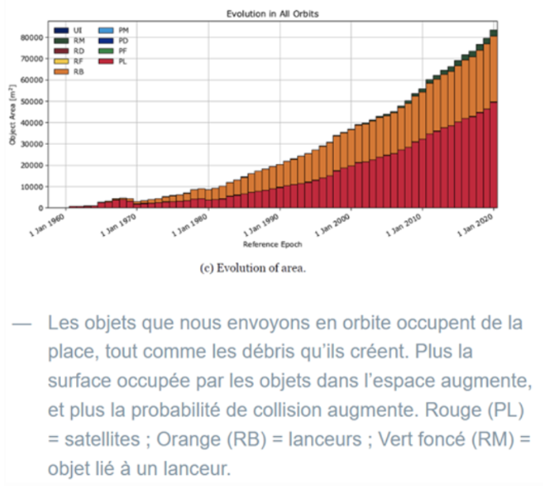

Impact écologique/environnemental
L’idée de vouloir explorer et exploiter « l’espace » est assez aberrante dans le contexte actuel dans lequel nous vivons, selon quelques militants écolos et ceux qui sont de manière générale en faveur d’action radicale pour contrer le changement climatique.
L’Homme sur Terre s’est approprié depuis ses débuts les ressources qui lui ont été possibles d’avoir, mais n’a cessé de le faire jusqu’à maintenant sans penser aux impacts qu'engendreraient ses actions sur notre petite sphère bleue, sur notre climat et sur les sociétés habitant cette planète.
En effet, nous avons pris conscience très tard de nos actions, malgré les signaux d’alerte qui nous ont été énoncés dans les années 50-60 sur les conséquences qu’auraient nos actions sur le climat et de manière plus générale, la vie.
Des conséquences irréversibles ont eu lieu sur la biodiversité qu’abritait la Terre, elle constituait la véritable richesse de la planète bleue, unique parmi les planètes que constitue notre système solaire et voir même notre galaxie, ou bien même notre univers.
Depuis le début de la période industrielle, nous avons éradiqué environ 69% des insectes, de la faune sauvage présente sur Terre selon des spécialistes.
L’industrie aérospatiale fait partie des secteurs responsables de ce fléau, malgré les missions de recherche effectuées dans la base internationale qui se dit en « faveur » de l’environnement et de la protection de la planète, d’après le CNES.
Pour rappel, la fusée Américaine Saturn V qui a envoyé les premiers humains en 1969 vidait l’équivalent d’une piscine olympique à la seconde. C’est donc en 15 min que 3 630 000 litres de carburant fossile étaient brûlés, c’est l’équivalent d’une voiture parcourant 1296 fois le tour de la Terre au niveau de l'Équateur.
En effet, cette industrie est très émettrice en gaz à effet de serre, notamment en CO2.
Il faut aussi chercher les métaux lourds et certains métaux rares pour fabriquer ces fusées et les technologies associés, notamment avec l’or, l’holmium qui est utilisé dans les aimants, prométhème dans les alliages constituant les fusées …
L’extraction de ces minerais se fait dans des mines où l’exploitation, l’extraction de ces derniers émettent beaucoup de C02, car on utilise des machines qui utilisent des carburants fossiles.
Pour donner un ordre de grandeur, le vol de 4 passagers émet en moyenne 200 à 300 tonnes de C02.
Aujourd’hui, les entreprises privées et les Etats qui s’inscrivent dans une démarche de concurrence dans ce secteur construisent des fusées toujours plus grandes et toujours plus performantes et donc fortement émettrices. Aurélien Barrau appelle cette situation « Bataille d’égo des nations et des entreprises ».
A titre d’exemple, Falcon 9 de Space X émet pour un seul vol 1150 tonnes de CO2, c’est équivalent à l’émission de 683 ans d’une voiture parcourant 15 000 Km/an.
Le carburant principal des fusées aujourd’hui est un mélange de kérosène et de méthane, lorsque ce mélange brûle, la combustion libère d’autres gaz nocifs pour la couche d’ozone.
En 2022, s’est 180 fusées envoyées en orbite, ce nombre va augmenter très fortement dans les années à venir avec 50 lancements par sites par an.
Donc oui, aujourd’hui il ne faut pas nier le fait que cette filière pollue beaucoup et est responsable de la hausse des températures sur Terre surtout qu’il n’existe aucune réglementation en matière d’émissions en CO2 pour les vols de fusées.
Les conséquences sont nombreuses, aujourd’hui, des Etats sont obligés de prendre des décisions qui n’auraient jamais été prises il y a 100 ans notamment avec le déplacement de la capitale de l’Indonésie, Jakarta qui est menacé d’être sous l’eau d’ici 2050.
Quoiqu’on veuille aujourd’hui intégrer les notions d’écologie et d’environnement dans l’industrie aérospatiale, en cherchant à utiliser des biocarburants ou alors des matières recyclées, tout ceci ne règle pas les soucis présents sur Terre.
En effet, c’est Aurélien Barreau qui nous le rappelle en disant « qu’il faut tout d’abord choisir dans quel monde souhaitable nous voulons vivre ». Est-il souhaitable de vivre dans un monde où on émet de plus en plus de CO2, où on détruit la vie sur Terre ? C’est-à-dire continuer nos activités sans adresser un seul regard aux véritables problèmes auxquels tous les êtres vivants font face et devront faire face.
D’après cet astrophysicien engagé dans la lutte écologique, nous vivons dans une époque folle où l’humanité préfère abandonner la vie et s’adonner à des fantasmes, explorer un espace vide, froid et mort. « Tandis que nous éradiquons la vie et la beauté sur l’unique planète habitée connue à ce jour, nous nous enthousiasmons de parvenir - dans un gigantesque déluge de feu, une orgie de métal et de fureur - à atteindre... des espaces froids, tristes et vides. Quelle étrange folie. »
Enfin, le risque d’accident n’est pas nul et peut conduire à des catastrophes sans précédent.
Le premier vol Starship de Space X a entraîné l’explosion de la rampe de lancement, ce qui a conduit à la dispersion de béton causant des incendies de forêt, notamment sur des réserves naturelles abritant des espèces menacées dans la région de Boca Chica.
Le souci encore une fois c’est que les plateformes de lancement se trouvent souvent dans des lieux isolés loin des activités civiles mais près des lieux de vie de certains animaux sauvages.
Par exemple, les pas de tir d'Ariane 6 vont engendrer un défrichement d’une partie de la savane en Guyane, les installations vont détruire des habitats naturels comprenant notamment des fougères classées espèces protégées.
D’après Defender of WildLife, les lancements de fusées peuvent causer des commotions cérébrales (à cause des vibrations de l’air et du sol) chez certains petits animaux et insectes qui se trouvent dans un rayon inférieur à 3 Km de la base.
On pourrait croire que la pollution n’existe que dans nos océans, nos sols et l’air que nous respirons alors qu’elle existe aussi dans les orbites de la Terre.
Aujourd’hui le CNES nous informe d’une pollution d’objet avec des risques à prendre au sérieux, « Aujourd'hui, nous avons une pollution extra-atmosphérique, en particulier en orbite basse, qui est extrêmement importante. »
En effet, on recense plus de 34 000 objets de plus de 10 cm, dans nos orbites ayant en moyenne une vitesse de 28 000 Km/h.

Le problème n’est pas vraiment le fait qu’il y a des risques de collisions, tous les acteurs dans ce secteur sont au courant. Un des soucis les plus importants serait dans le domaine de l’astrophysique et l’astronomie. Les nombreux débris sont responsables d’une pollution visuelle au niveau de nos télescopes ce qui nous empêche d’accéder à la connaissance depuis notre planète.
C’est dangereux car c'est comme si on s’auto prive de la connaissance qui pourrait nous servir à mieux comprendre les mécanismes qui régissent notre monde, les étoiles, les nébuleuses, notre univers.
En effet, ces nombreux débris absorbent une partie de la lumière qui pourrait être émise à des années-lumières de nous, or la lumière est la seule information que nous disposons pour traiter ce qui se situe hors de notre portée, on sait que voir très loin, c’est voir dans le passé.
Cette pollution spatiale mettrait fin à l’exercice d’observer notre univers mais elle mettrait fin aussi à la beauté d’observer les cieux dans toute sa splendeur depuis nos lunettes.
Pour conclure, l'investissement sur “l’exploration spatiale” constitue un véritable fléau pour notre environnement, pour les êtres vivants mais aussi pour nos constellations.
Elle engendre des pollutions de différents types qui ont chacune des conséquences particulières sur l'état de la vie sur Terre.
Les dégâts environnementaux sont colossaux, sont souvent mis de côté et peu médiatisés du fait que l’exploration spatiale constitue un fantasme chez beaucoup de gens encore aujourd’hui.